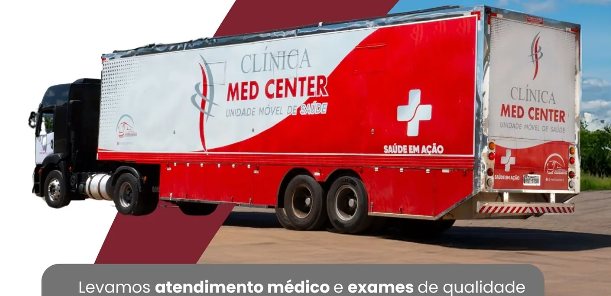
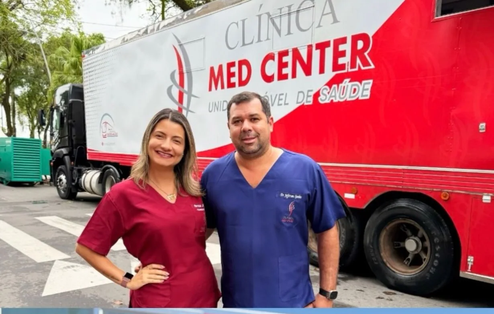
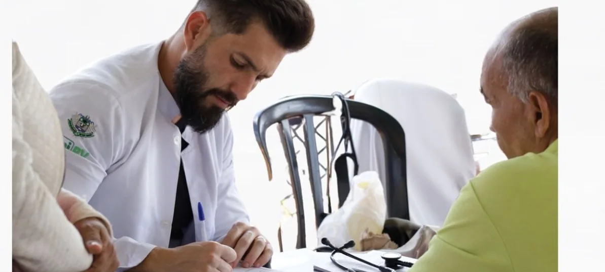

01↗
Diagnóstico por imagem
Exames e recursos diagnósticos que apoiam uma assistência mais completa e decisões clínicas informadas.
Conhecimento, estrutura e compromisso para levar diagnóstico e assistência em saúde a quem mais precisa.
QUEM SOMOS
01 / 05A Clínica Med Center atua na oferta de serviços de saúde com foco em diagnóstico, assistência e ações que aproximam o atendimento da população.
Com base em Alvorada do Norte, Goiás, desenvolvemos uma atuação comprometida com a qualidade, a organização e o acesso ao cuidado — inclusive por meio de estruturas móveis e ações em diferentes localidades.
Conheça nossa forma de atuar ↗


O QUE FAZEMOS
Da assistência especializada às iniciativas itinerantes, trabalhamos para aproximar pessoas dos serviços que precisam.
Exames e recursos diagnósticos que apoiam uma assistência mais completa e decisões clínicas informadas.
Estruturas e equipes que ajudam a ampliar o alcance dos serviços de saúde em diferentes municípios.
Organização de iniciativas assistenciais para levar atendimento a localidades e públicos diversos.
Atendimento e iniciativas voltados à prevenção, ao diagnóstico e ao cuidado integral feminino.
Serviços e ações voltados ao cuidado com a visão e à ampliação do acesso à saúde ocular.
Consultas e suporte assistencial de acordo com o planejamento e as necessidades de cada ação.
A disponibilidade de serviços e especialidades depende da unidade, da localidade e da programação de cada ação.
NOSSA ATUAÇÃO
Nosso trabalho conecta planejamento, capacidade técnica e presença no território, colaborando para ampliar o acesso a serviços de saúde.
Converse com nossa equipe ↗VAMOS CONVERSAR?
CONTATO E LOCALIZAÇÃO
Fale com nossa equipe para conhecer os serviços e esclarecer informações sobre atendimentos e ações disponíveis.